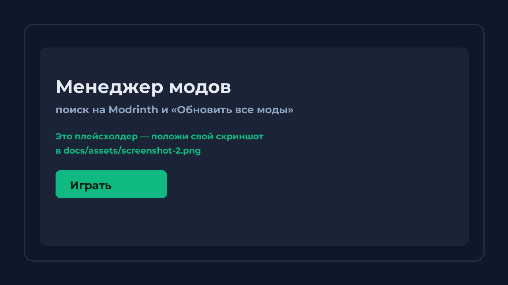
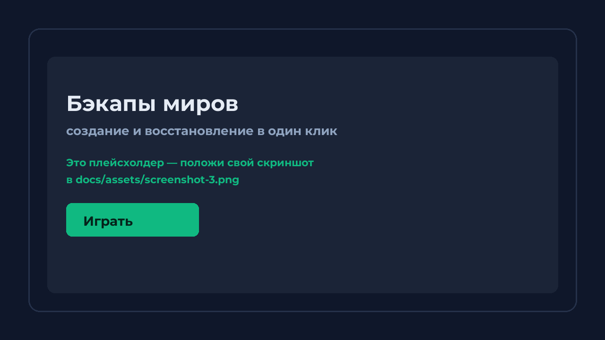

🧩 Изолированные сборки
У каждой сборки свои mods, resourcepacks, shaderpacks, saves и настройки — модпаки больше не конфликтуют.
Windows 10 / 11 · открытый код · GPL-3.0
Отдельные сборки со своими модами и сохранениями, установка игры и загрузчика в один клик,
менеджер модов с Modrinth, автобэкапы миров и обмен сборками одним файлом.
Игра ставится туда, куда скажешь ты — а не в забитый C:.
≈ 35 МБ · версия 1.0 · Python и Java ставить не нужно
Всё, за что обычно приходится платить или ставить три разных лаунчера — в одном.
У каждой сборки свои mods, resourcepacks, shaderpacks, saves и настройки — модпаки больше не конфликтуют.
Minecraft и загрузчик (Vanilla, Fabric, Forge, NeoForge, Quilt) скачиваются сами, а после обрыва сети докачиваются с места остановки.
Если нужной версии Java нет в системе, лаунчер скачает рантайм Mojang внутрь сборки.
Папку для сборок выбираешь при первом запуске. Если места мало — лаунчер сам предложит самый свободный диск.
Поиск, установка, удаление и кнопка «Обновить все моды» — прямо в лаунчере.
Копия сохранений создаётся автоматически перед установкой и обновлением. Восстановление — в один клик.
«Поделиться сборкой» делает лёгкий файл: ZIP для этого лаунчера или модпак .mrpack — его откроет и Prism Launcher.
Статус «играю в Minecraft» в профиле, присоединение к игре по приглашению, 15 тем, консоль и логи.
Кликни по скриншоту, чтобы увеличить.


Один файл SimpleCraftLauncher.exe — Python, библиотеки и Java уже внутри.
Windows может попросить подтверждение — это нормально для новых программ.
Рядом с лаунчером или на другом диске, где есть место. Потом сборки можно перенести одной кнопкой.
Выбери версию и загрузчик, при желании поставь моды — и в игру.
Нет. Лаунчер собран PyInstaller-ом, а антивирусы часто дают ложные срабатывания на такие файлы. Проверить можно самому: он собран из открытых исходников, права администратора не требует и ничего не пишет в системные папки.
Нет. Python и библиотеки уже внутри EXE, а нужную версию Java лаунчер скачает сам при первой установке.
Сборки — в папке, которую ты выбрал (например B:\SimpleCraftLauncher\instances);
настройки, аккаунты и логи — в папке data рядом с лаунчером.
В C:\Users ничего не пишется.
Кнопка «Поделиться сборкой» → сохрани ZIP или модпак .mrpack. Друг открывает файл
через «Импорт сборки», а игра, библиотеки и Java докачаются у него сами — поэтому файл маленький.
Лаунчер сам покажет причину и предложит два пути: увеличить файл подкачки Windows (правильный) или запустить всё равно — на свой риск. Подсказка появится прямо в окне.
Да, если сборка не Vanilla: моды поддерживают Fabric, Forge, NeoForge и Quilt. Загрузчик выбирается при создании сборки.
Лаунчер бесплатный и с открытым кодом. Если он пригодился — можно поддержать разработку или просто поставить звезду репозиторию.
Minecraft — торговая марка Mojang Studios / Microsoft. Проект не связан с Mojang Studios и не одобрен ею.